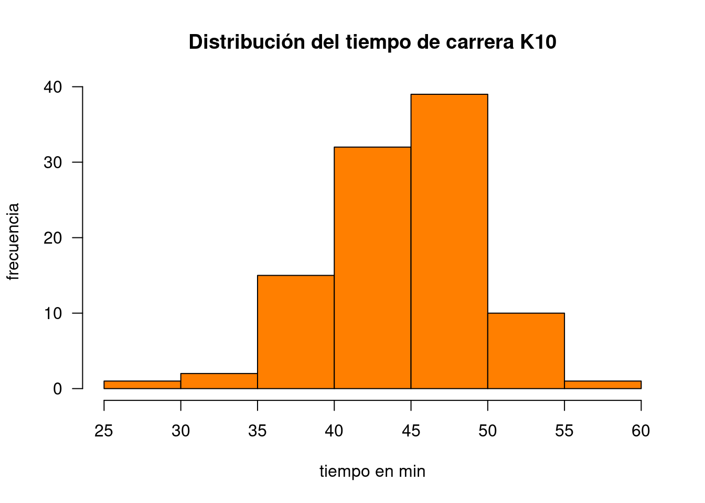
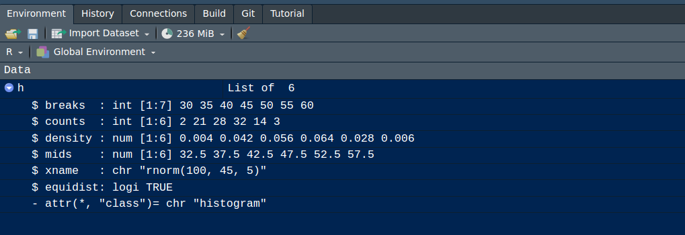
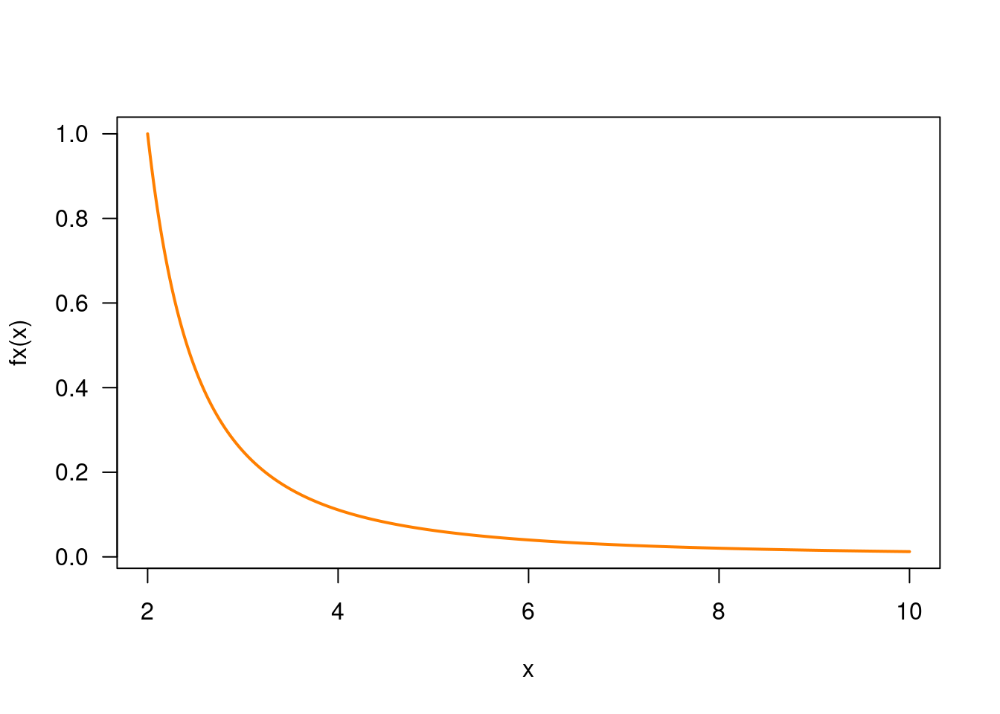
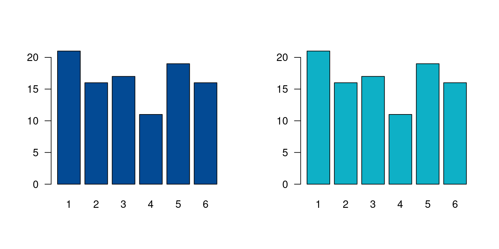

A manera de introducción a continuación se relacionan algunas ayudas para la iniciación del lenguaje :
Tabla 3.1 Tipos de objetos
| Objeto | tipos | permite varios tipos? |
|---|---|---|
| vector | numéricos, caracter, complejo, lógico | No |
| factor | numérico, caracter | No |
| arreglo | numéricos, caracter, complejo, lógico | No |
| matriz | numéricos, caracter, complejo, lógico | No |
| data.frame | numéricos, caracter, complejo, lógico | Si |
| ts | numéricos, caracter, complejo, lógico | Si |
| lista | numéricos, caracter, complejo, lógico, función, expresión | Si |
A continuación se presentan algunos ejemplos de objetos
Arreglo unidimensional de valores, caracteres o cadenas, todos del mismo tipo
x=c(1,2,3,4,5)
x## [1] 1 2 3 4 5y=c("Muy regular", "Regular", "Bueno", "Muy bueno", "Excelente")
y## [1] "Muy regular" "Regular" "Bueno" "Muy bueno" "Excelente"Arreglo bidimensional de valores
x=1:9
m=matrix(x,nrow=3) # <<-
m## [,1] [,2] [,3]
## [1,] 1 4 7
## [2,] 2 5 8
## [3,] 3 6 9Arreglos multimensionales de valores. En el siguiente ejemplo se representa un arreglo de 3 matrices 3x3 que conformarían en 3D un cubo de datos
x=1:9
y=10:18
z=19:27
mn=array(c(x,y),dim=c(3,3,3)) # <<-
mn## , , 1
##
## [,1] [,2] [,3]
## [1,] 1 4 7
## [2,] 2 5 8
## [3,] 3 6 9
##
## , , 2
##
## [,1] [,2] [,3]
## [1,] 10 13 16
## [2,] 11 14 17
## [3,] 12 15 18
##
## , , 3
##
## [,1] [,2] [,3]
## [1,] 1 4 7
## [2,] 2 5 8
## [3,] 3 6 9Vector de variables categóricas, por lo general se utilizan para dividir una base en subgrupos
x=c("rojo", "verde", "azul")
y=rep(x, times=4)
y=as.factor(y) # <<-
y## [1] rojo verde azul rojo verde azul rojo verde azul rojo verde azul
## Levels: azul rojo verdeColección de objetos cada uno de tipos diferentes. El objeto de esta clase guarda valores en diferentes formatos.
En el siguiente ejemplo se construye un objeto h que contiene varios elementos dentro de si, todos relacionados con un histograma
h=hist(rnorm(100,45,5), col = "#FF7F00", main = "Distribución del tiempo de carrera K10", las=1, xlab = "tiempo en min", ylab ="frecuencia") 

Estructura de datos de dos dimensiones - filas y columnas - base de
datos. con la función data() se pueden cargar bases de
datos contenidas en R. data(iris) carga la base iris que
contiene 150 registros (colomnas) y 5 variables (filas).
data(iris) # carga la data desde un paquete activado
head(iris) # presenta los primeros 6 registros## Sepal.Length Sepal.Width Petal.Length Petal.Width Species
## 1 5.1 3.5 1.4 0.2 setosa
## 2 4.9 3.0 1.4 0.2 setosa
## 3 4.7 3.2 1.3 0.2 setosa
## 4 4.6 3.1 1.5 0.2 setosa
## 5 5.0 3.6 1.4 0.2 setosa
## 6 5.4 3.9 1.7 0.4 setosaPara construir una función utilizamos la palabra
function, entre paréntesis los valores de entrada y entre
corchetes la formula que conforma la función. Por ejemplo:
\[f(x)=\dfrac{1}{(x-1)^{2}}\] \(f(4.5) = ?\)
fx=function(x){1/(x-1)^2} # <<-
fx(4.5)## [1] 0.08163265En este caso la función es evaluada dentro de un otra función en la construcción de un gráfico
fx=function(x){1/(x-1)^2}
x=seq(from=2,to=10, by=0.01) # genera secuencia de numeros entre 2 y 10 con paso 0.01
plot(x, fx(x), type="l", col="#FF7F00", lwd = 2, las=1) # genera grafica
El siguiente ejemplo construye una función para la realización de un gráfico. En este caso los valores de entrada están conformados por un vector de datos y un color
# funcion definida para la construcción de gráficos
grafica=function(x,color){
barplot(x,col=color, las=1)
}
# funcion definida para la construcción de gráficos
grafica=function(x,color){
barplot(x,col=color, las=1)
}
y=sample(1:6,100, replace = T) # generacion de datos
z=table(y) # generacion de tabla de datos
par(mfrow = c(1, 2)) # arma una matrix 1X2 de graficos
grafica(z,"#034A94") # evalúa la función en los datos z y colo rojo
grafica(z,"#0EB0C6")
Los objetos ts corresponde a series temporales que están
compuestos por un inicio, un final y una periodicidad temporal
regular
x=round(rnorm(285, 20,3),1) # datos sumulados
temperatura=ts(x,freq=12,start=c(2000,1)) # <<-
temperatura## Jan Feb Mar Apr May Jun Jul Aug Sep Oct Nov Dec
## 2000 20.4 19.7 21.1 22.4 23.0 18.2 23.3 18.3 21.1 17.0 16.8 21.7
## 2001 20.4 16.9 15.3 21.6 19.9 18.0 20.8 24.1 17.5 16.2 16.2 22.6
## 2002 17.7 23.2 20.5 18.1 19.4 22.2 15.6 24.5 22.3 22.0 16.8 16.8
## 2003 21.1 18.4 16.9 14.4 14.0 20.7 21.3 24.6 24.0 18.8 21.5 15.6
## 2004 21.2 21.8 21.7 23.3 17.7 21.1 28.0 24.7 22.3 17.9 23.1 21.4
## 2005 24.9 23.1 22.2 20.9 21.8 21.5 15.9 15.4 20.2 22.2 21.4 26.3
## 2006 23.6 19.4 22.6 19.5 14.5 21.6 14.6 22.6 19.6 17.8 16.2 21.6
## 2007 18.9 14.3 24.2 22.0 23.5 20.8 25.5 15.8 18.7 15.7 18.7 18.0
## 2008 13.2 23.0 19.9 17.8 22.4 17.4 22.6 17.7 17.8 18.6 21.4 17.8
## 2009 19.3 12.3 15.6 22.3 18.8 20.5 17.8 15.2 15.8 25.0 19.7 19.6
## 2010 18.7 21.4 20.6 14.3 23.9 18.0 19.8 18.8 19.7 18.9 17.7 25.2
## 2011 22.3 17.1 19.0 23.0 15.7 17.1 20.3 12.2 18.1 22.2 22.3 25.0
## 2012 23.8 12.8 19.8 21.0 16.7 16.2 23.9 21.1 21.9 19.3 22.5 14.0
## 2013 17.1 21.8 18.5 23.0 19.9 23.9 20.8 22.6 12.5 19.2 18.7 22.2
## 2014 19.0 18.3 15.0 17.0 24.1 23.9 18.3 16.5 20.6 18.9 17.0 20.3
## 2015 17.0 20.9 19.0 27.7 23.6 20.1 20.6 22.0 20.2 22.6 19.6 25.1
## 2016 21.5 20.1 13.7 22.8 20.3 22.4 22.8 17.2 16.8 18.2 17.6 21.0
## 2017 21.3 24.5 18.7 15.7 20.2 17.0 20.3 19.2 18.3 18.4 19.4 15.7
## 2018 25.3 22.4 18.3 22.3 14.6 24.5 25.1 17.6 22.7 17.7 24.2 19.9
## 2019 22.4 22.7 19.8 25.4 21.6 16.9 23.4 16.5 22.3 22.4 18.8 22.9
## 2020 17.6 17.0 25.1 20.3 20.4 20.4 16.9 23.1 20.0 15.1 19.3 19.1
## 2021 24.5 21.3 21.7 19.1 15.0 20.0 24.4 21.9 20.2 16.7 20.8 20.2
## 2022 25.0 16.9 22.3 20.4 21.0 22.8 23.5 23.4 19.9 19.4 20.4 17.7
## 2023 20.6 20.9 18.6 19.3 19.9 20.7 16.3 21.2 15.9Tabla 3.2 Operadores lógicos
| Aritméticos | Comparativos | Lógicos | |||
|---|---|---|---|---|---|
| + | adición | < | menor que | !x | NO lógico |
| - | substracción | > | mayor que | x & y | Y lógico |
| * | multiplicación | <= | menor o igual que | x | y |
| / | división | >= | mayor o igual que | x or y | O exclusivo |
| ^ | potencia | == | igual | ||
| %% | módulo | != | diferente de | ||
| %/% | división enteros |
rep(x, # objeto a replicar
times = 1, # número de veces que ser replica objeto
length.out = NA, # repetir el objeto las veces necesarias para crear vector de esta longitud
each = 1) # número de veces que se replica elementos individiales del objeto
vector= c("uno", "dos", "tres")
rep(vector, times=4)## [1] "uno" "dos" "tres" "uno" "dos" "tres" "uno" "dos" "tres" "uno"
## [11] "dos" "tres"vector= c("uno", "dos", "tres")
rep(vector, each=4)## [1] "uno" "uno" "uno" "uno" "dos" "dos" "dos" "dos" "tres" "tres"
## [11] "tres" "tres"vector= c("uno", "dos", "tres")
rep(vector, times=4, length.out=7)## [1] "uno" "dos" "tres" "uno" "dos" "tres" "uno"
seq(from=0, # valor inicial
to=10, # valor final
by=0.5, # valor incremento
length.out=NULL, # longitud del secuencia
along.with=NULL) # longitd del vector
Secuencia de números enteros del 1 al 20
seq(20) # equivalente a 1:20## [1] 1 2 3 4 5 6 7 8 9 10 11 12 13 14 15 16 17 18 19 201:20## [1] 1 2 3 4 5 6 7 8 9 10 11 12 13 14 15 16 17 18 19 20Secuencia de números pares entre el 1 y el 20
seq(2,20,2)## [1] 2 4 6 8 10 12 14 16 18 20Secuencia de números del 0 al 1 con incrementos de 0.1
seq(0, 1, 0.1)## [1] 0.0 0.1 0.2 0.3 0.4 0.5 0.6 0.7 0.8 0.9 1.0
round(x, # valor
digits = 0) # nmero de digitos
Aprimar el valor de \(\pi\) a 3 decimales
pi## [1] 3.141593round(pi,3) # aproxima a 3 decimales## [1] 3.142Entrega la parte entera de un número
Sacar la parte entera de \(\pi\)
trunc(pi)## [1] 3